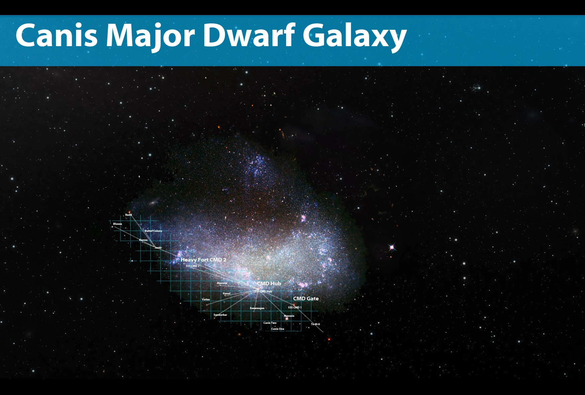
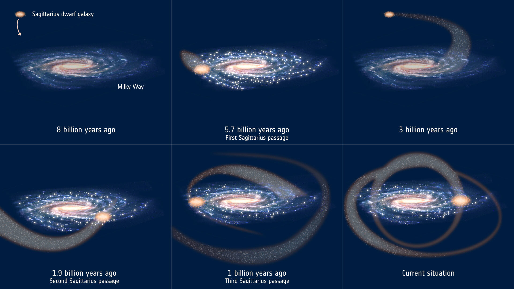
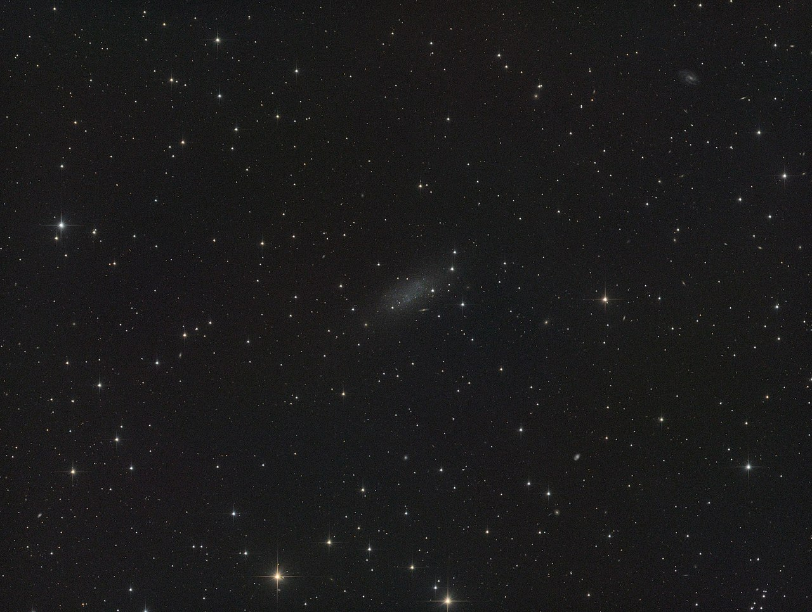

Welcome to Space!🚀
You may know much about our solar system and all the planets including the dwarf planets.But have you ever wondered about what goes beyond our solar system?
Well Buckle up for an adeventure as this websites tells you secrets of the world outside the solar system!
The Kupier Belt

a donut-shaped region of icy bodies beyond the orbit of Neptune. There may be millions of these icy objects, collectively referred to as Kuiper Belt objects (KBOs) or trans-Neptunian objects (TNOs), in this distant region of our solar system.
The Oort Cloud
The Oort Cloud is the most distant region of our solar system. Even the nearest objects in the Oort Cloud are thought to be many times farther from the Sun than the outer reaches of the Kuiper Belt.
Unlike the orbits of the planets and the Kuiper Belt, which lie mostly in the same flat disk around the Sun, the Oort Cloud is believed to be a giant spherical shell surrounding the rest of the solar system. It is like a big, thick-walled bubble made of icy pieces of space debris the sizes of mountains and sometimes larger. The Oort Cloud might contain billions, or even trillions, of objects.
Canis Major Dwarf Galaxy

Travel Distance to this : 25,000 light years
The main body of the Canis Major is extremely degraded. Tidal disruption causes a filament of stars to trail behind it as it orbits the Milky Way, forming a complex ringlike structure, sometimes referred to as the Monoceros Ring, which wraps around the Milky Way three times.
The stream of stars was discovered in the early 21st century by astronomers conducting the Sloan Digital Sky Survey. The Monoceros Ring is similar to the Virgo Stellar Stream which is thought to be the result of the Milky Way tearing stars and gases from the Sagittarius Dwarf Spheroidal Galaxy into a Stellar Stream
The Sagittarius Dwarf Elliptical Galaxy

The Sagittarius Dwarf Spheroidal Galaxy (Sgr dSph), also known as the Sagittarius Dwarf Elliptical Galaxy (Sgr dE or Sag DEG), is an elliptical loop-shaped satellite galaxy of the Milky Way.
It contains four globular clusters in its main body, with the brightest of them NGC 6715 (M54) being known well before the discovery of the galaxy itself in 1994.
Sgr dSph is roughly 10,000 light-years in diameter, and is currently about 70,000 light-years from Earth, travelling in a polar orbit (an orbit passing over the Milky Way's galactic poles) at a distance of about 50,000 light-years from the core of the Milky Way (about one third of the distance of the Large Magellanic Cloud).
The Andromeda Galaxy

The Andromeda Galaxy is a barred spiral galaxy and is the closest major galaxy to the Milky Way, where the Solar System resides. It was originally named the Andromeda Nebula and is cataloged as Messier 31, M31, and NGC 224.
Pegasus Dwarf Irregular Galaxy

The Pegasus Dwarf Irregular Galaxy (also known as Peg DIG or the Pegasus Dwarf) is a dwarf irregular galaxy in the direction of the constellation Pegasus. It was discovered by A. G. Wilson in the 1950s. The Pegasus Dwarf is a companion of the Andromeda Galaxy in the Local Group.